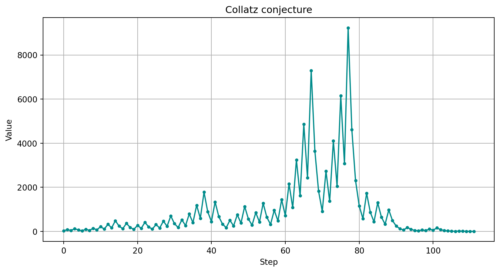

import matplotlib.pyplot as plt
def collatz_conjecture(n):
sequence = [n]
while n != 1:
if n % 2 == 0:
n = n // 2
else:
n = 3 * n + 1
sequence.append(n)
return sequence
def plot_collatz(n):
sequence = collatz_conjecture(n)
plt.plot(sequence, linestyle='-', marker='o', markersize=3, color='darkcyan')
plt.xlabel('Step')
plt.ylabel('Value')
plt.title('Collatz conjecture')
plt.grid(True)
plt.show()
plot_collatz(27)Presentation example
Slideshow using Quarto and Reveal.js
Introduction
- hello
- welcome
- Reveal.js
🎯 Objectives
Metadata
The metadata of the current document is shown at the top of the page
preview-links: true: view in current window. Try ittransition: slide: choose transmition modechalkboard: true: activate chalkboardcontrols: true: show navigation arrows
Speaker View
::: {.notes}to add personal notesSto activateSpeaker View
Utilisation :
- On your own screen: display Speaker View
- On the presentation screen: display the slideshow
Personal notes
- note 1
- note 2
Chalkboard
Bto open a blackboardCto draw on your slide
Lists
- item 1
- item 1.1
- item 1.2
- item 2
incrémental display
- item 3
- item 4
Table
| Number | Name | Main City |
|---|---|---|
| 01 | Ain | Bourg-en-Bresse |
| 02 | Aisne | Laon |
| 03 | Allier | Moulins |
| 04 | Alpes-de-Haute-Provence | Digne-les-Bains |
| 05 | Hautes-Alpes | Gap |
Code

import matplotlib.pyplot as plt
def collatz_conjecture(n):
sequence = [n]
while n != 1:
if n % 2 == 0:
n = n // 2
else:
n = 3 * n + 1
sequence.append(n)
return sequence
def plot_collatz(n):
sequence = collatz_conjecture(n)
plt.plot(sequence, linestyle='-', marker='o', markersize=3, color='darkcyan')
plt.xlabel('Step')
plt.ylabel('Value')
plt.title('Collatz conjecture')
plt.grid(True)
plt.show()
plot_collatz(27)Big text
The r-fit-text class makes text as large as possible without overflowing the slide.
Big Text
Image size auto
Use class .r-stretch with your image to automatically adapt image size.
Animation
Animation
Implicit
Animation